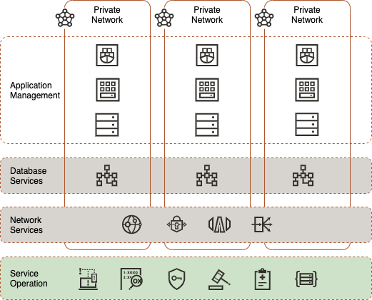
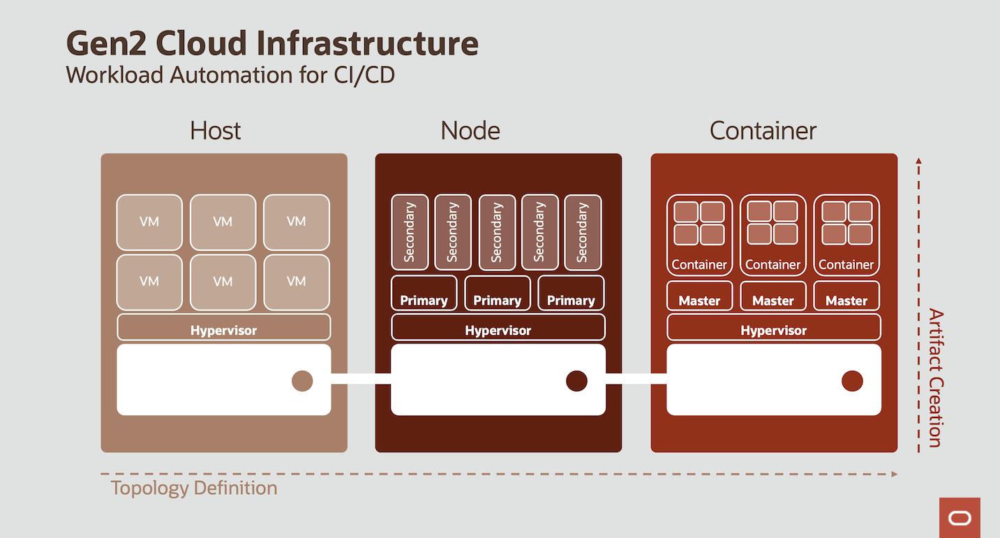
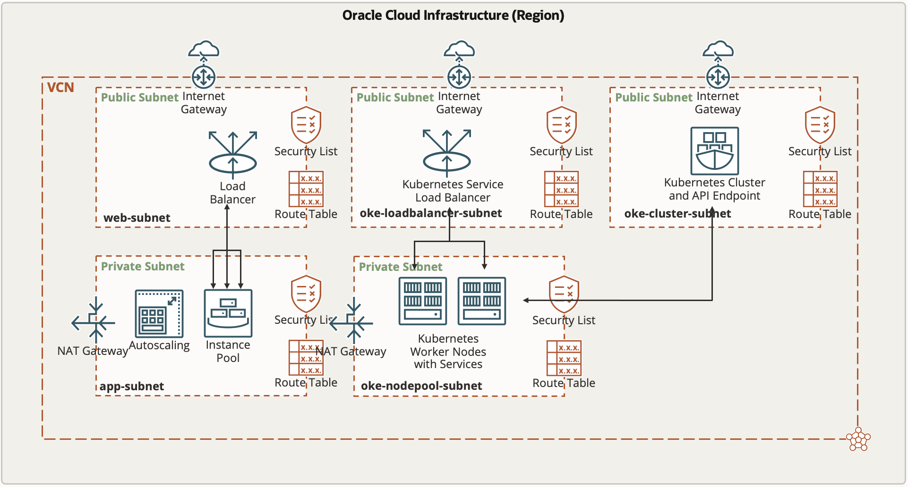

<div class="initial-content">
  <div id="main" role="main">

  <article class="page has-sidebar" itemscope itemtype="https://schema.org/CreativeWork">
    <meta itemprop="headline" content="Application Infrastructure">
    
    <meta itemprop="datePublished" content="2021-12-06T12:00:00+00:00">
    


    <header>
      <h1 id="page-title" class="page__title" itemprop="headline">Application Infrastructure
</h1>
      


    </header>

    <section class="page__content" itemprop="text">
      

        <picture class="aligncenter">
                <source srcset="assets/landing-zone.png 1x" />
                
            </picture>

<p>Oracle Cloud Infrastructure (OCI) allows different deployment models within a shared network using the same Infrastructure-as-Code (IaC) methods. When setting up our operation, we distinguish between core and orchestration service API. <em>Core services</em> represent the physical infrastructure in our data center while <em>orchestration services</em> refer to software that runs outside the core service portfolio, interacts with the application code, and manipulates the behavior of virtual instances. Both application developers and service operators alike need to delineate the following four infrastructure deployment models when designing a multi-server architecture:</p>

<ul>
  <li><strong>Dedicated Server -</strong> Virtual Machines (VM) or bare metal server that maintain stateful communication interfaces on layer three.</li>
  <li><strong>Elastic Compute Cluster -</strong> One or more VM that scales automatically and maintain a stateless communication interface on layer three.</li>
  <li><strong>Container Cluster -</strong> One or more dedicated server that host lightweight stand-alone, executable user space images including code, runtime, system tools, system libraries, settings to run on a linux kernel.</li>
  <li><strong>Miscellaneous -</strong> Functions, ephemeral, single purpose, self contained, or stateless container without an API surface, invoked via network protocols like HTTP.</li>
</ul>

<p>While public cloud providers also offer these instance types as products, OCI provides the ability to defines logical resources such as respective orchestrators. We can rely on managed services for open source orchestrators or choose commercial third-party offerings. Either way, we invoke an orchestrator and write modules for the resource manager. In this article, we’ll focus on these three different models:  host, node, and container.</p>

<picture class="aligncenter">
                <source srcset="assets/host_node_container.png 1x" />
                
            </picture>

<h2 id="host-model">Host model</h2>

<p>The <em>host model</em> is the one most known from on-premise environments. On a dedicated physical machine, Virtual Machines (VMs) can be deployed that run either stateless or stateful applications. OCI offers both ways here:</p>

<ul>
  <li>You can deploy a bare metal host, install the hypervisor, and deploy the VMs on top of it.<br />
Here, you are responsible for the VMs and the hypervisor layer as well as the Operating System (O/S) of the bare metal host. You will have full root access to the O/S of the bare metal server and it will be inside a Virtual Cloud Network (VCN) that you own.</li>
  <li>You can deploy a Dedicated VM Host and deploy the VMs on top of it.<br />
This is the approach that we use here:
    <ul>
      <li>
        <p>You can use Terraform to fully deploy both the Dedicated VM Host as well as the VMs on top of it. Each VM will be instantiated with its own Virtual Network Interface Card (VNIC) which can be individually placed into VCNs and subnets that you own. Since the Dedicated VM Host itself is fully managed by Oracle, you won’t have any O/S access to it and the Dedicated VM Host won’t be placed in any VCN.</p>
      </li>
      <li>
        <p>You can use tools like <strong>Packer</strong> to first build a custom image with all applications and data you need on your VMs before applying Terraform to instantiate the VMs.<br />
The <code class="language-plaintext highlighter-rouge">cloud-init</code> option of Terraform gives the opportunity to apply a shell script on the instantiated VMs to add either individual pieces of data or installations immediately after the instantiation.</p>
      </li>
      <li>
        <p>The shell script is added as a base64-encoded attribute to the resource definition of the instance.<br />
Through metadata key-value pairs, Terraform can pass parameters to the instance that can be used inside the cloud-init shell script to parameterize the actual shell execution.</p>
      </li>
      <li>
        <p>The Terraform stack consists of a <code class="language-plaintext highlighter-rouge">dedicatedHost.tf</code> file which can be used to create a Dedicated VM Host.<br />
By default, this code is commented out because the Service Limits of many demo-tenants do not allow the creation of Dedicated VM Hosts. However, this capability can easily be activated by removing the comments start/end lines.</p>
      </li>
    </ul>
  </li>
</ul>

<h2 id="node-model">Node model</h2>

<p>The <em>Node model</em> applies the cloud principle to adapt the number of available nodes to the current amount of workload. Here, we have primary workloads running that control secondary workloads on top which will be scaled in and out based on on-demand capacity rather than capacity from a Dedicated VM Host in order to optimize the costs. The secondary workloads should be stateless in practice since scaling in means that those nodes might be terminated by the Cloud Control at any time if the overall workload could be sufficiently executed by less nodes.</p>

<p>OCI has the following artifacts to create this scenario, which can be fully deployed by Terraform:</p>

<ul>
  <li>
    <p><strong>Instance Configuration -</strong> An Instance Configuration that acts as the blueprint for the pool of secondary workloads VMs.<br />
Here, you define:</p>

    <ul>
      <li>A Custom Image that should be used (can be built using <strong>Packer</strong> and you can use <code class="language-plaintext highlighter-rouge">cloud-init</code> provider for further work).</li>
      <li>The Shape of the pool instances (e.g., <em>VM.Standard2.1</em>, which means a 1 OCPU Intel X7 VM with network-attached storage).</li>
      <li>The public part of the <strong>ssh</strong> key pair to access the O/S of the instance.</li>
    </ul>
  </li>
  <li>
    <p><strong>Instance Pool -</strong> The Instance Pool object refers to an Instance Configuration. This Instance Configuration adds information about in which Availability Domain it will be in, as well as in which subnet the instance pool’s instances’ VNICs should be placed. Furthermore, you define how many VMs should be started. You can add a load balancer to the instance pool definition in a way that any created instances inside the pool will be part of this load balancer’s backend set, so that incoming requests are forwarded to the instance pool instances (e.g., in a round-robin-manner). Load balancers also support cookie-based session stickiness in case this is needed by stateful applications running in the instance pool instances.</p>
  </li>
  <li>
    <p><strong>Autoscaling Configuration -</strong> The Autoscaling Configuration refers to an Instance Pool and adds policies for when new instances should be automatically added or removed. You define the incremental and decremental step size (number of instances to be added or removed when a scale-in or scale-out event occurs) as well as the minimum and maximum number of instances. Two autoscaling policies are supported:</p>

    <ul>
      <li>
        <p><strong>Schedule-based Autoscaling:</strong> Here, the scaling-out and scaling-in rules are defined based on fixed schedules similar to definitions in cron jobs. This is feasible if regular workload peaks are to be expected like loading data into a Data Warehouse or providing Analytic reporting at certain times during a day, week, or month.</p>
      </li>
      <li>
        <p><strong>Metrics-based Autoscaling:</strong> Here, the scaling-out and scaling-in rules are based on overall instance pool metrics that the instances report using agents to the Cloud Control. OCI allows the following metrics to be used in this option:</p>

        <ul>
          <li>CPU Utilization (in percent)</li>
          <li>Memory Utilization (in percent)</li>
        </ul>
      </li>
    </ul>

    <blockquote class="notice">
      <p><strong>Note:</strong> In the Autoscaling Configuration, you define the percent threshold value above which the pool will scale out (add an instance or instances if the maximum number is not yet reached) and the percent threshold value below which the pool will scale in (terminate an instance or instances if the minimum number is not yet reached).</p>
    </blockquote>
  </li>
</ul>

<p>In this scenario, we trigger a 100% CPU utilization process with each new instance pool upon creation (using <code class="language-plaintext highlighter-rouge">cloud-init</code>) whose duration in minutes can be set by a user-defined variable as part of the Terraform stack definition. This way we can optionally demonstrate the scaling-in and scaling-out according to an CPU-utilization based auto-scaling policy.</p>

<p>Further, we deploy a https server along with a static page for each instance pool instance (including a timestamp of the instance’s creation). This stateless “application” is exposed to the public internet by a load balancer, so you can directly see the round-robin-fashioned forwarding of requests to the instance pool instances by reloading the page in the browser. The corresponding public load balancer endpoint is displayed as part of the Terraform out parameters. In this stack, the load balancer exposes the “application” with https, using a self-signed certificate that is also created inside the Terraform stack.</p>

<h2 id="container-model">Container Model</h2>

<p>The <em>Container model</em> is the preferred cloud model for stateless applications like Functions. OCI offers a fully managed <strong>Kubernetes</strong> Cluster, the OCI Container Engine (OKE). Again, this can be deployed using Terraform.</p>

<p>OKE consists of:</p>

<ul>
  <li>The Kubernetes Cluster which provides the Kubernetes API endpoint as well as the Scheduler and Controller Manager.<br />
These components are fully managed by Oracle and visible to the customer only using the Kubernetes API (e.g., either by using <strong>kubectl</strong> or by deploying <em>Helm</em> charts). The customer doesn’t have O/S access to this instance and is also free of charge.</li>
  <li>The Kubernetes Node Pool that contains the worker nodes.<br />
The customer has full root access using <em>ssh</em> but has to pay for these VMs. The charges are the same for Linux VMs of the respective shapes, meaning that there is no surcharge for their role as a Kubernetes worker node.</li>
  <li>
    <p>Additional elements are added and terminated according to Kubernetes deployments., e.g. when deploying a Load Balancer service to a Kubernetes cluster like:</p>

    <div class="language-console highlighter-rouge"><div class="highlight"><pre class="highlight"><code><span class="go">  kubectl expose deployment myapplication --type=LoadBalancer --name=myapplicationservice
</span></code></pre></div>    </div>

    <p>An OCI Load Balancer is automatically deployed and configured with the worker nodes in its backend set.</p>
  </li>
</ul>

<h2 id="kubeconfig"><code class="language-plaintext highlighter-rouge">.kube/config</code></h2>

<p>When the cluster is ready, the <code class="language-plaintext highlighter-rouge">.kube/config</code> file (which contains the network details like the Kubernetes Cluster’s API endpoint’s IP address and the authorization certificate) can be downloaded to a client using the following OCI Command Line Interface (OCI CLI) command:</p>

<div class="language-console highlighter-rouge"><div class="highlight"><pre class="highlight"><code><span class="gp">oci ce cluster create-kubeconfig --cluster-id ocid1.cluster.oc1.eu-frankfurt-1.aaaaathekubernetesclusterocidlqs27a --file $</span>HOME/.kube/config <span class="nt">--region</span> eu-frankfurt-1 <span class="nt">--token-version</span> 2.0.0 
<span class="gp">export KUBECONFIG=$</span>HOME/.kube/config
</code></pre></div></div>

<p>The Terraform stack also creates an Kubernetes Cluster along with a worker node pool. The contents of the <code class="language-plaintext highlighter-rouge">.kube/config</code> file can be directly accessed by a corresponding parameter of the Terraform Output.</p>

<p>Then, the client can, for example, apply <code class="language-plaintext highlighter-rouge">kubectl</code> to inspect, create, and destroy Kubernetes artifacts:</p>

<div class="language-console highlighter-rouge"><div class="highlight"><pre class="highlight"><code><span class="go">kubectl get nodes,pods
</span></code></pre></div></div>

<p>Output may look similar to:</p>

<div class="language-console highlighter-rouge"><div class="highlight"><pre class="highlight"><code><span class="go">NAME               STATUS   ROLES   AGE     VERSION
node/10.0.10.166   Ready    node    7h11m   v1.19.7

NAME                                 READY   STATUS    RESTARTS   AGE
pod/myapplication-588cf6ff66-cq684   1/1     Running   0          6h13m
pod/myapplication-588cf6ff66-hwtgd   1/1     Running   0          6h13m
pod/myapplication-588cf6ff66-q4228   1/1     Running   0          6h15m
</span></code></pre></div></div>

<h2 id="registry-service">Registry service</h2>

<p>OCI also offers a registry service (the OCI registry, OCIR) where container images can be stored and retrieved to be deployed to the Kubernetes cluster. OCIR allows registries to both be public (free access to anyone) or private (downloading images requires presenting a SWIFT-compliant API Key, a so-called <strong>OCI Auth Token</strong> that is created individually for each OCI User).</p>

<p>Besides deploying Kubernetes artifacts like pods, deployments, services, or replicasets, Terraform provides a Kubernetes provider to deploy these artifacts as part of the terraform apply process using a <strong>kubectl</strong> client. The <code class="language-plaintext highlighter-rouge">okeServiceDeployment.tf</code> shows the steps to take here:</p>

<ol>
  <li>Get the OKE Cluster’s config file and extract the CA certificate as well as the OCI CLI command (along with the necessary arguments) to create an ExecCredential.<br />
This OCI CLI command is executed so Terraform can authenticate to the Kubernetes API endpoint for further operations.</li>
  <li>Create a new namespace in Kubernetes.</li>
  <li>Define additional resources like <code class="language-plaintext highlighter-rouge">kubernetes_service</code> to deploy artifacts.<br />
Kubernetes artifacts are defined by yaml documents and those Terraform resources basically reformat these yaml documents to match the HashiCorp Configuration Language (HCL) standard.</li>
</ol>

<h3 id="example-stack">Example stack</h3>

<p>In this example stack, we deploy a standard NGINX server to the new generated Kubernetes Cluster. We take the standard NGINX image from the official Docker registry, but you can also deploy your own pods from stored docker images (e.g., in the OCI registry (OCIR)).</p>

<p>Next, we deploy this NGINX server as a <code class="language-plaintext highlighter-rouge">kubernetes_service</code> with “Load Balancer” as the type using Terraform. The advantage of using Terraform instead of a local <strong>kubectl</strong> client for deploying Kubernetes services is that these services are removed when destroying the Terraform stack. This is important because deploying a Kubernetes service as a “Load Balancer” means that an OCI Load Balancer with the Kubernetes deployment of pods in its backend is created outside of the Kubernetes Cluster. So you need to delete the Kubernetes service first when destroying the Terraform stack in order to properly remove this load balancer.</p>

<p>The complete network topology along with the compute instances, load balancers, and Kubernetes resources that will be created by running this stack can be seen in the image below:</p>

<picture class="">
                <source srcset="assets/network_topology_app_stack.png 1x" />
                
            </picture>

<p>After the Terraform stack has been successfully applied, you should see the following Kubernetes artifacts (e.g., by using the cloud shell):</p>

<div class="language-console highlighter-rouge"><div class="highlight"><pre class="highlight"><code><span class="go">kubectl get pods,deployments,replicasets,services --namespace nginx
</span></code></pre></div></div>

<p>Output should look something like:</p>

<div class="language-console highlighter-rouge"><div class="highlight"><pre class="highlight"><code><span class="go">NAME                         READY   STATUS    RESTARTS   AGE
pod/nginx-5c48f8956d-84456   1/1     Running   0          41m
pod/nginx-5c48f8956d-wwq8s   1/1     Running   0          41m

NAME                    READY   UP-TO-DATE   AVAILABLE   AGE
deployment.apps/nginx   2/2     2            2           41m

NAME                               DESIRED   CURRENT   READY   AGE
replicaset.apps/nginx-5c48f8956d   2         2         2       41m

NAME            TYPE           CLUSTER-IP      EXTERNAL-IP      PORT(S)        AGE
service/nginx   LoadBalancer   10.96.113.223   152.70.173.212   80:32177/TCP   33m
</span></code></pre></div></div>

<table>
  <tbody>
    <tr>
      <td><a href="getting-started-with-oci-step-3-database-infrastructure">&lt; db-infra</a></td>
      <td><a href="index">+</a></td>
      <td><a href="getting-started-with-oci-step-5-workload-deployment">workload &gt;</a></td>
    </tr>
  </tbody>
</table>

<h2 id="whats-next">What’s next</h2>

<p>In this article, we covered the various deployment options OCI supports and focused in on the Container model for stateless applications like Functions. We also discussed cluster configuration and the OCI Registry service.  At this point, you should be ready for our next topic!</p>

<p>In the next section of the series, we’ll discuss <a href="./getting-started-with-oci-step-5-workload-deployment.md">workload deployment</a>.</p>

<!--- Links -->


          <div class="sidebar sticky">
    <!-- <p><strong>Tags:</strong> <span class="tags">

            
            <a class="animated-link tag" href="/topics/open-source">open-source</a>
            <a class="animated-link tag" href="/topics/terraform">terraform</a>
            <a class="animated-link tag" href="/topics/iac">iac</a>
            <a class="animated-link tag" href="/topics/devops">devops</a>
            <a class="animated-link tag" href="/topics/get-started">get-started</a>
            </span>
    </p> -->
  


<div itemscope itemtype="https://schema.org/Person">

  

  <div class="author__content">
    
      <h3 class="author__name" itemprop="name">Malte Menkhoff</h3>
    
    
      <div class="author__bio" itemprop="description">
        <p>Malte is a passioned solution architect and is supporting customers in the DACH region in migrating to OCI.</p>

      </div>
    
  </div>

  <div class="author__urls-wrapper">
    <ul class="author__urls social-icons">
      

      

      

      
        <li>
          <a href="mailto:malte.menkhoff@oracle.com">
            <meta itemprop="email" content="malte.menkhoff@oracle.com" />
            <i class="fas fa-fw fa-envelope-square" aria-hidden="true"></i><span class="label">Email</span>
          </a>
        </li>
      

      

      

      

      

      

      

      

      

      
        <li>
          <a href="https://github.com/kubemen" itemprop="sameAs" rel="nofollow noopener noreferrer">
            <i class="fab fa-fw fa-github" aria-hidden="true"></i><span class="label">GitHub</span>
          </a>
        </li>
      

      

      

      

      

      

      

      

      

      

      

      

      

      

      
    </ul>
  </div>
</div>

  
  
  

  </div>


      </section>

      <footer class="page__meta">
        
        


        

  <p class="page__date"><strong><i class="fas fa-fw fa-calendar-alt" aria-hidden="true"></i> Updated:</strong> <time datetime="2021-12-06T12:00:00+00:00">December 6, 2021</time></p>


      </footer>
    </div>

  </article>
</div>

</div>

